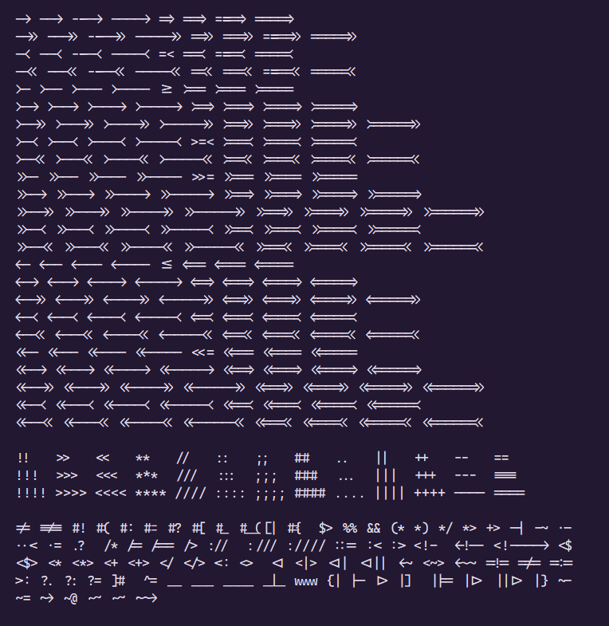

Ligatures in Emacs
I think i've finally figured it out 😌. How to config the ligatures properly!
The code (see below) uses ligature.el package and enable (most of, if not all) the ligatures in Cascadia Code, including arbitrary long "arrows" of various kinds
(ligature-set-ligatures t '("(*" "*)" "^=" "www" "?:" "?=" "?." "{|" "$>" "[|" "]#" ("<" "[<!]?[-=]+[<>]*\\|[~*|$+/:]*[<>]*") ("=" "=*>>?\\|[:</=!][=<]*") ("-" "-*<+\\|[~|]\\|-*>?>?") ("#" "#+\\|[[{:=?(_!](?") (":" "//+\\|:*[=<>]?") ("/" "/+\\|=*[>*]?") ("." "\\.*[<?=-]?") ("|" "|*[]=>}-]?") ("*" "\\**[/>]?") ("~" "[~@=>-]>?") (">" "[>=:-]+<*") ("!" "=+\\|!+") ("+" "+*>?") ("_" "|?_+") ("%" "%+") ("&" "&+") (";" ";+"))) (global-ligature-mode t)
How it looks like
